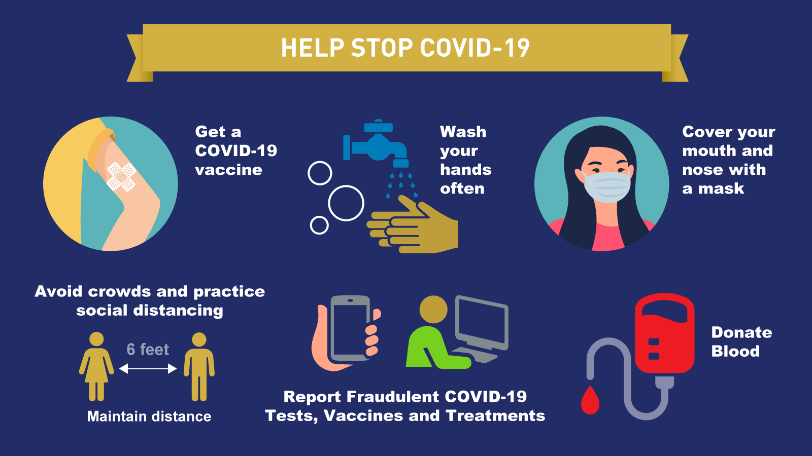
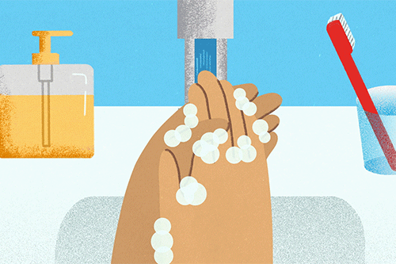

How to Protect Yourself & Others

Get Vaccinated and stay up to date on your COVID-19 vaccines
- COVID-19 vaccines are effective at preventing you from getting sick. COVID-19 vaccines are highly effective at preventing severe illness, hospitalizations, and death.
- Getting vaccinated is the best way to slow the spread of SARS-CoV-2, the virus that causes COVID-19.
- CDC recommends that everyone who is eligible stay up to date on their COVID-19 vaccines, including people with weakened immune systems.
Wear a mask
- Everyone ages 2 years and older should properly wear a well-fitting mask indoors in public in areas of substantial or high community transmission, regardless of vaccination status.
- Improve how well your mask protects you, and learn about how to choose a mask to protect yourself and others.
- In general, people do not need to wear masks when outdoors. In areas of substantial or high transmission, people might choose to wear a mask outdoors when in sustained close contact with other people, particularly if
- They or someone they live with has a weakened immune system or is at increased risk for severe disease.
- They are not up to date on COVID-19 vaccines or live with someone who is not up to date on COVID-19 vaccines.

Stay 6 feet away from others
- Inside your home: Avoid close contact with people who are sick, if possible. If possible, maintain 6 feet between the person who is sick and other household members. If you are taking care of someone who is sick, make sure you properly wear a well-fitting mask and follow other steps to protect yourself
- Indoors in public: If you are not up to date on COVID-19 vaccines, stay at least 6 feet away from other people, especially if you are at higher risk of getting very sick with COVID-19.
Wash your hands often
- Wash your hands often with soap and water for at least 20 seconds
- If soap and water are not readily available, use a hand sanitizer that contains at least 60% alcohol.
Cover all surfaces of your hands and rub them together until they feel dry.
- Avoid touching your eyes, nose, and mouth with unwashed hands.